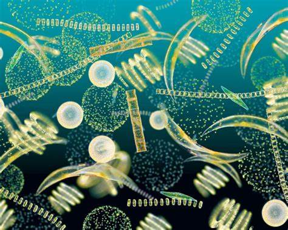
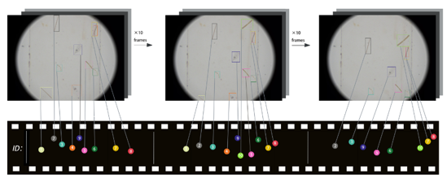
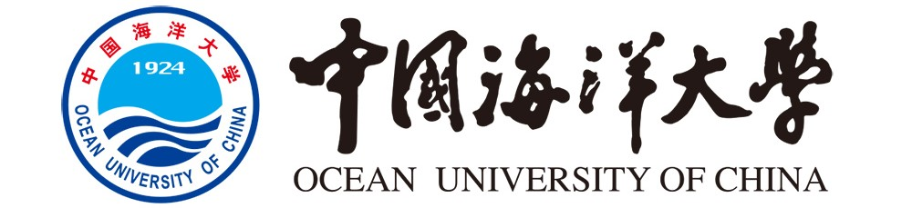

欢迎来到浮游植物观测与视觉分析课题组

|  |
人工智能研究院 水下视觉实验室浮游植物观测与视觉分析课题组Phytoplankton Observation and Visual Analysis (POVA) Group @ OUC |
浮游植物观测与视觉分析课题组隶属于中国海洋大学人工智能研究院水下视觉实验室， 负责人为董军宇教授。 该课题组研究方向聚焦于水下浮游动植物的观测和分析，以及计算机视觉、机器学习和大模型等相关技术的研究与应用。
海洋浮游植物实时原位监测仪
有害藻华和赤潮是近海常见的灾害性生态异常现象，已成为一类全球性的海洋环境灾害，有害藻华爆发已严重威胁到海水养殖、海域生态安全和人类健康。但现有监测技术不足以根据藻华的不同生长阶段进行及时采样，无法为微生物群落演替与浮游植物互作过程提供实时监测。
本项目拟研发基于光学显微技术的原位观测软硬件系统，完成针对海洋浮游植物的高性能、低功耗原位监测和实时处理任务，并利用北斗卫星短报文模块实时返回原位观测和实时识别系统的结果，研究特定海域浮游植物繁殖与海洋环境要素变化规律之 间的关系。